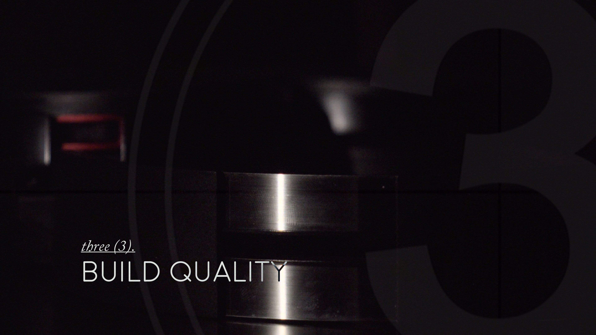
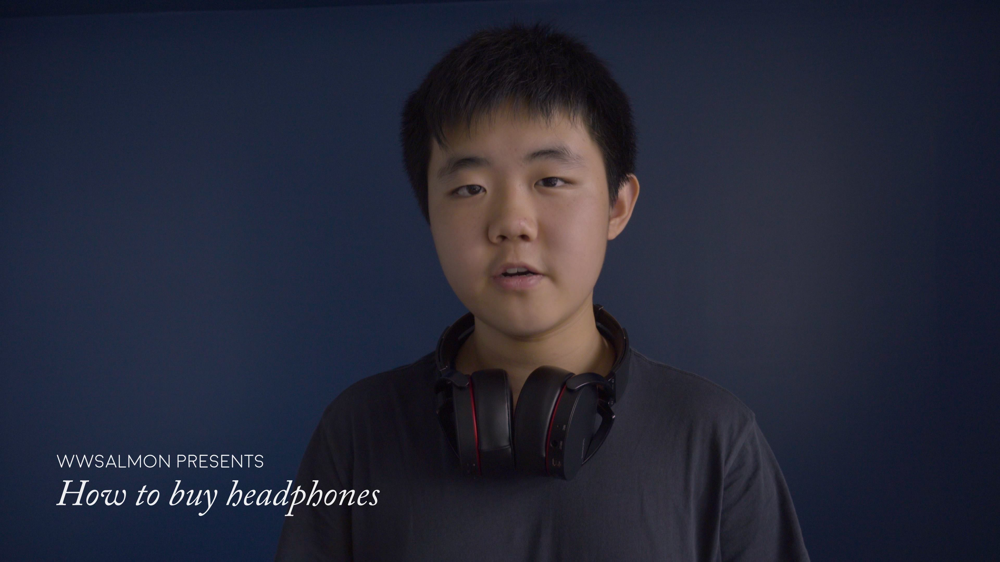
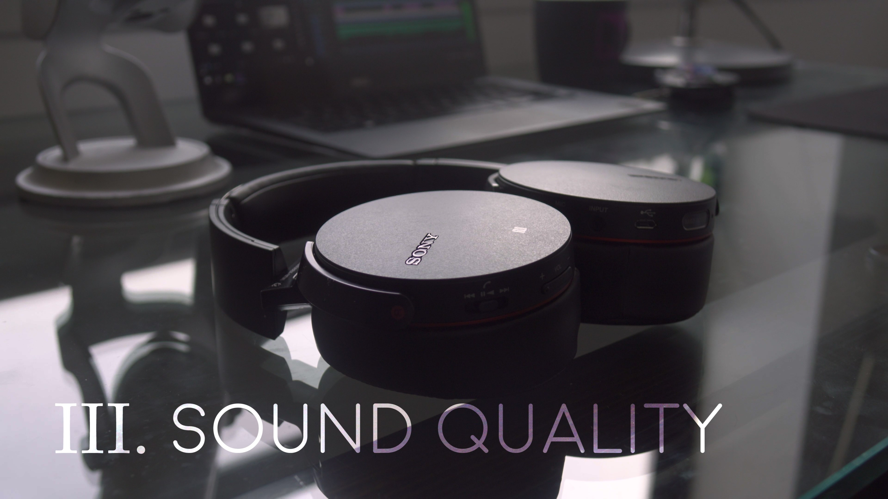
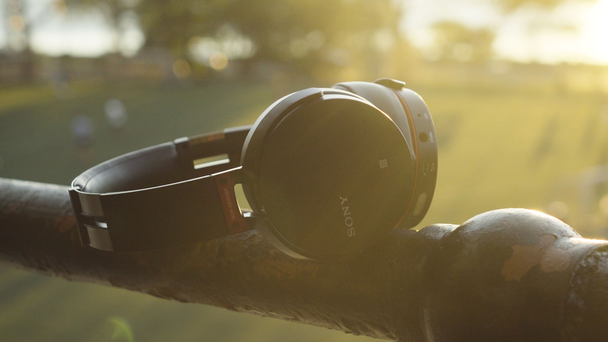

Sony XB950BT Headphones Review
Form: YouTube Video/Informational Video/Video Essay
Roles: Writer, Host, Cinematographer, Editor
Introduction
When I first wrote the case study for this project, I called it lots of things - "the culmination of what I wanted to gain from my run on YouTube", "the last full review video before other video projects or my work for 2 Train Robotics took over". Then, I got an email from Alien asking me to review the Sound Intone P6s.
In retrospect, I would rather say that my XB950 review was more the start of a new period than the end of an old one; my YouTube channel still hosts the same genre of content that it always has - tech review videos, and I haven't stopped making those. However, the XB950s marked the point where the skills that I gained allowed me to pursue lots of other opportunities, like 2 Train Robotics and my short film projects.
As I wrote previously: "It was...a milestone in many ways: it was the first video I fully edited and color graded in Premiere Pro, the first full review video I filmed with a proper DSLR camera (the Sony RX10 II), and I was able to experiment a lot with lighting, foley/sound effects, motion graphics, and color. All of this paid off when I got new, bigger opportunities to further use and develop my filmmaking skills."
The rest of this case study holds the behind-the-scenes explanations as it was written before the start of production on my P6 video; since my XB950 video, I have improved in many ways, but much of it carries over to what I continue to do.
Timetable
Pre-production: 1-2 weeks
Production: 1-2 weeks
Post-production: ~1 week
The Making of
The video consisted of two sections: an introduction section, and an A-roll/B-roll hosted section.
The introduction section is very simple. It consists of three video elements and three audio elements.

The first video element is the base video. This was just footage of the headphones with harsh lighting and shadows. I shot it by putting the headphones on a table in a dark room and moving my phone's flashlight around to get the desired lighting effect. In post, I added color grading and speed ramps and mixed all the clips together to get the base for the fast-paced intro sequence.
The second video element is the movie countdown overlay. This is video I downloaded from online and set to the blending mode "Screen", then added opacity keyframes to make it pulse on each number.
The third video element is the text - "sound quality", "comfort", and "build quality". These were all criteria of judgement for the headphoens that would come up later on the video. I dropped these into the intro and added opacity keyframes to make it look like it was being lit by the flashlight, and it added a nice effect.
The base audio element was just the sound of wind howling. The "beep" tones from the countdown were added, and a static noise with volume envelopes reflecting the lighting was also added.
At the end of the intro, the wind and static fade and a chord plays. The sound of a door opening and closing is heard in the background, then the music and A-roll start.
Although each element was really simple, together they formed an intro that I thought formed an eye-catching and polished transition into the rest of the video.
For the A-roll shots, I stood in front of a blue wall in my living room. There was a big window on camera right, letting in a lot of light, and the white wall on camera left bounced a lot of it back, creating a pretty nice lighting setup. I filmed these shots with my RX10 II on a tripod in front of me and my laptop and Blue Yeti microphone on a piano bench in front of me to record audio.
On top of the A-roll, B-roll and titles were added. I shot all the B-roll either in my room or at Riverside Park with just my RX10 II and my tripod. On one of the days I stayed until the sun set, getting some really nice backlighting and color, as you can see in the thumbnail and the frame below.
Everything was put together in Adobe Premiere Pro. A few of the animated titles were made in After Effects. Since everything was shot in S-Log 2, I graded everything using Lumetri in Premiere Pro.
Though the video was overall pretty simple, I'm really happy with how it turned out. I learned a lot about Premiere Pro and After Effects and applied some things I had learned earlier to use (character animation, color grading, volume/opacity animation, motion graphics), and had a lot of fun making this project.